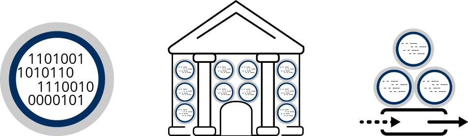
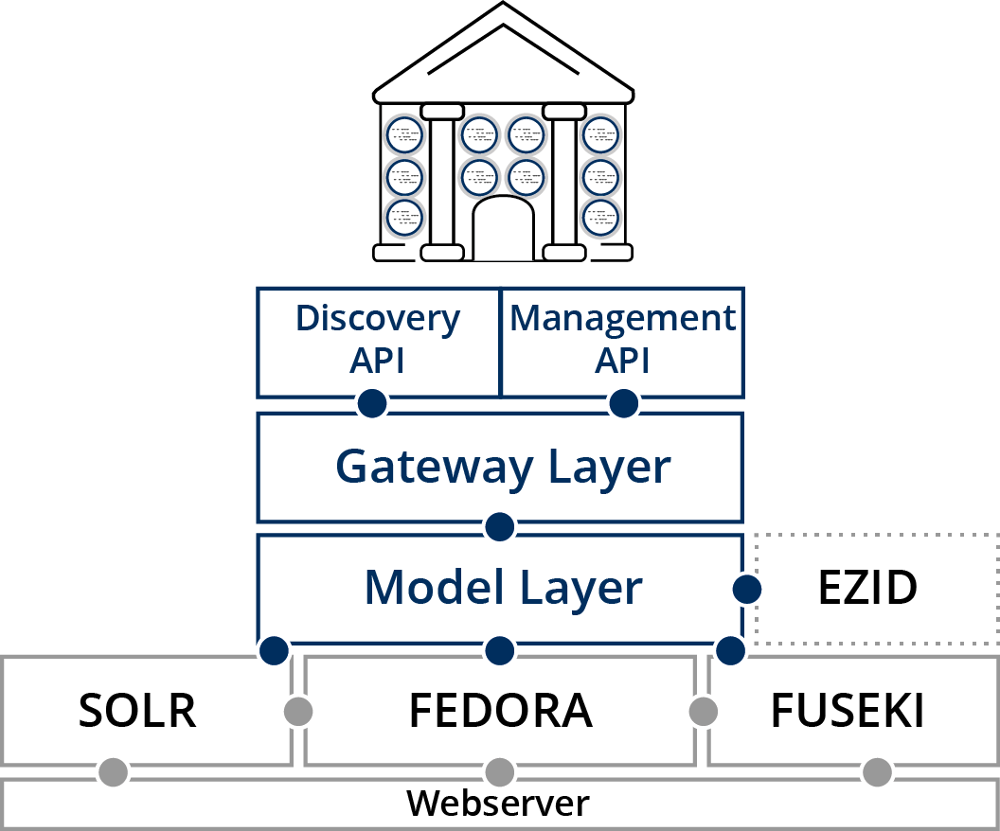
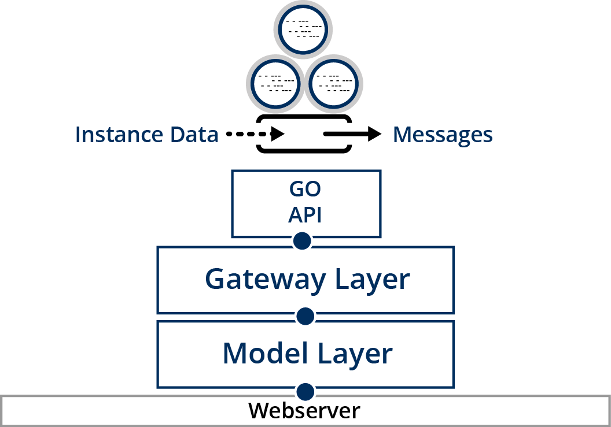

Feature
Introduction

Knowledge Grid works this way. First convert health knowledge into computer-processable forms as Knowledge Objects. Then add Knowledge Objects to the Digital Library where they are protected and managed as resources. Next, deploy Knowledge Objects of interest with an Activator, which sets them up as services. Finally, use the Activator to process external health instance data and generate health advice messages.
Knowledge Objects

Knowledge Objects represent knowledge in a modular, computer-processable form. Knowledge Objects combine a knowledge payload – encoded in any computer language or computable format – with a detailed description and an interface.
Making knowledge computer-processable involves methods for representing health knowledge as production rules, network graphs, structured assertions, equations, and probabilities. Once these methods are applied to make knowledge actionable and computable, a knowledge payload results. This payload is encapsulated in a Knowledge Object. Examples of Knowledge Object payloads include predictive models, computable guidelines, measurement questionnaires, computable phenotypes, and clinical decision support rules. Knowledge Objects represent knowledge resources in modular, computer-processable forms, externalize it and servicize it.
Object Library

The Object Library protects and supports management of Knowledge Objects, making it easy to access and deploy them.
The Object Library is built upon a Fedora-based repository, supported by SOLR for search and FUSEKI for reporting. It includes a Model Layer that helps encode Knowledge Objects. The Model Layer calls on EZID to mint unique identifiers for every Knowledge Object. The Object Library also has a Gateway Layer supporting two APIs. The Discovery API provides a capability to find and access Knowledge Objects. The Management API provides a capability to store and manage Knowledge Objects.
Object Activators
